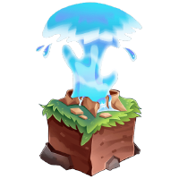

<link rel="stylesheet" href="/css/download.css">

<section class="container">
    <div class="download-tabs">
        <ul class="nav nav-tabs" id="download" role="tablist">
            <li class="nav-item" role="presentation">
                <button class="nav-link active" id="spigot-tab" data-bs-toggle="tab" data-bs-target="#spigot" type="button" role="tab" aria-controls="spigot" aria-selected="true"> Paper / Spigot</button>
            </li>
            <li class="nav-item" role="presentation">
                <button class="nav-link" id="velocity-tab" data-bs-toggle="tab" data-bs-target="#velocity" type="button" role="tab" aria-controls="velocity" aria-selected="false"> Velocity</button>
            </li>
            <li class="nav-item" role="presentation">
                <button class="nav-link" id="bungeecord-tab" data-bs-toggle="tab" data-bs-target="#bungeecord" type="button" role="tab" aria-controls="bungeecord" aria-selected="false"> Waterfall / BungeeCord</button>
            </li>
            <li class="nav-item" role="presentation">
                <button class="nav-link" id="fabric-tab" data-bs-toggle="tab" data-bs-target="#fabric" type="button" role="tab" aria-controls="fabric" aria-selected="false"> Fabric</button>
            </li>
            <li class="nav-item" role="presentation">
                <button class="nav-link" id="sponge-tab" data-bs-toggle="tab" data-bs-target="#sponge" type="button" role="tab" aria-controls="sponge" aria-selected="false"> Sponge</button>
            </li>
            <li class="nav-item" role="presentation">
                <button class="nav-link" id="standalone-tab" data-bs-toggle="tab" data-bs-target="#standalone" type="button" role="tab" aria-controls="standalone" aria-selected="false"> Standalone</button>
            </li>
        </ul>
    </div>
    <div class="tab-content fs-6" id="downloadContent">
        <div class="tab-pane fade show active" id="spigot" role="tabpanel" aria-labelledby="spigot-tab">
            {% capture info %}{{ site.descriptions["spigot"].info }}{% endcapture %}
            {% capture setup %}{{ site.descriptions["spigot"].setup }}{% endcapture %}
            {% capture platform %}{{ "spigot" }}{% endcapture %}
            {% include download-tab.html info=info setup=setup platform=platform %}
        </div>
        <div class="tab-pane fade" id="velocity" role="tabpanel" aria-labelledby="velocity-tab">
            {% capture info %}{{ site.descriptions["velocity"].info }}{% endcapture %}
            {% capture setup %}{{ site.descriptions["velocity"].setup }}{% endcapture %}
            {% capture platform %}{{ "velocity" }}{% endcapture %}
            {% include download-tab.html info=info setup=setup platform=platform %}
        </div>
        <div class="tab-pane fade" id="bungeecord" role="tabpanel" aria-labelledby="bungeecord-tab">
            {% capture info %}{{ site.descriptions["bungeecord"].info }}{% endcapture %}
            {% capture setup %}{{ site.descriptions["bungeecord"].setup }}{% endcapture %}
            {% capture floodgate_id %}{{ site.descriptions["bungeecord"].floodgate_id }}{% endcapture %}
            {% capture platform %}{{ "bungeecord" }}{% endcapture %}
            {% include download-tab.html info=info setup=setup floodgate_id=floodgate_id platform=platform %}
        </div>
        <div class="tab-pane fade" id="fabric" role="tabpanel" aria-labelledby="fabric-tab">
            {% capture info %}{{ site.descriptions["fabric"].info }}{% endcapture %}
            {% capture setup %}{{ site.descriptions["fabric"].setup }}{% endcapture %}
            {% capture platform %}{{ "fabric" }}{% endcapture %}
            {% include download-tab.html info=info setup=setup platform=platform %}
        </div>
        <div class="tab-pane fade" id="sponge" role="tabpanel" aria-labelledby="sponge-tab">
            {% capture info %}{{ site.descriptions["sponge"].info }}{% endcapture %}
            {% capture setup %}{{ site.descriptions["sponge"].setup }}{% endcapture %}
            {% capture platform %}{{ "sponge" }}{% endcapture %}
            {% include download-tab.html info=info setup=setup platform=platform %}
        </div>
        <div class="tab-pane fade" id="standalone" role="tabpanel" aria-labelledby="standalone-tab">
            {% capture info %}{{ site.descriptions["standalone"].info }}{% endcapture %}
            {% capture setup %}{{ site.descriptions["standalone"].setup }}{% endcapture %}
            {% capture platform %}{{ "standalone" }}{% endcapture %}
            {% include download-tab.html info=info setup=setup platform=platform %}
        </div>
    </div>
</section>
